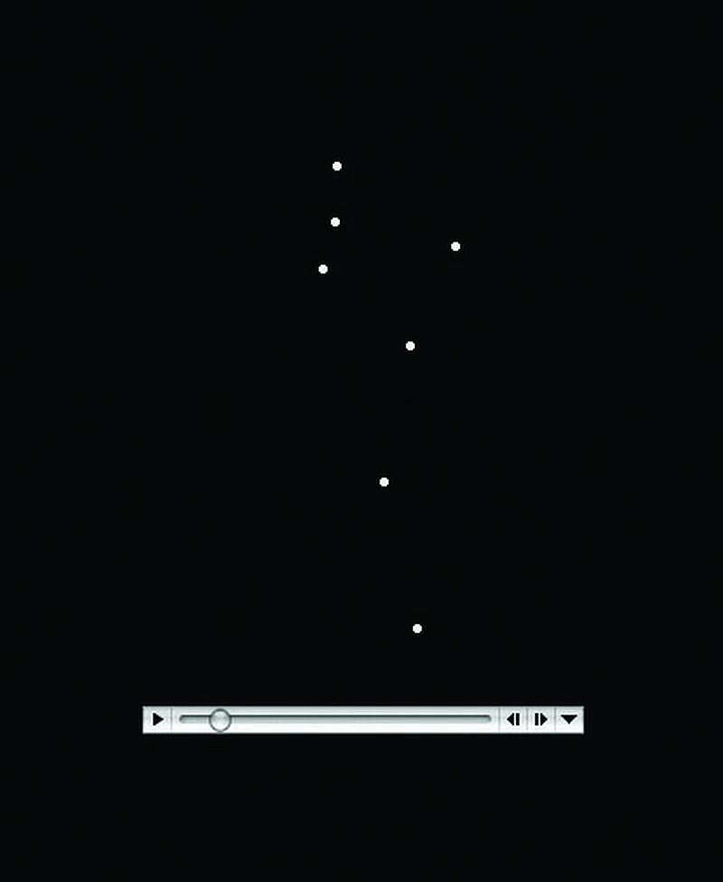

People are very skilled at person perceptionThe process of learning about other people.—the process of learning about other people—and our brains are designed to help us judge others efficiently (Haselton & Funder, 2006; Macrae, 2010).Haselton, M. G., & Funder, D. C. (2006). The evolution of accuracy and bias in social judgment. In M. Schaller, J. A. Simpson, & D. T. Kenrick (Eds.), Evolution and social psychology (pp. 15–37). Madison, CT: Psychosocial Press; Macrae, C. N., & Quadflieg, S. (2010). Perceiving people. In S. T. Fiske, D. T. Gilbert, & G. Lindzey (Eds.), Handbook of social psychology (5th ed., Vol. 1, pp. 428–463). Hoboken, NJ: John Wiley & Sons. Infants prefer to look at faces of people more than they do other visual patterns, and children quickly learn to identify people and their emotional expressions (Turati, Cassia, Simion, & Leo, 2006).Turati, C., Cassia, V. M., Simion, F., & Leo, I. (2006). Newborns’ face recognition: Role of inner and outer facial features. Child Development, 77(2), 297–311. As adults, we are able to identify and remember an unlimited number of people as we navigate our social environments (Haxby, Hoffman, & Gobbini, 2000),Haxby, J. V., Hoffman, E. A., & Gobbini, M. I. (2000). The distributed human neural system for face perception. Trends in Cognitive Sciences, 4(6), 223–233. and we form impressions of those others quickly and without much effort (Carlston & Skowronski, 2005; Fletcher-Watson, Findlay, Leekam, & Benson, 2008).Carlston, D. E., & Skowronski, J. J. (2005). Linking versus thinking: Evidence for the different associative and attributional bases of spontaneous trait transference and spontaneous trait inference. Journal of Personality and Social Psychology, 89(6), 884–898; Fletcher-Watson, S., Findlay, J. M., Leekam, S. R., & Benson, V. (2008). Rapid detection of person information in a naturalistic scene. Perception, 37(4), 571–583. Furthermore, our first impressions are, at least in some cases, remarkably accurate (Ambady, Bernieri, & Richeson, 2000).Ambady, N., Bernieri, F. J., & Richeson, J. A. (2000). Toward a histology of social behavior: Judgmental accuracy from thin slices of the behavioral stream. In M. P. Zanna (Ed.), Advances in experimental social psychology (Vol. 32, pp. 201–271). San Diego, CA: Academic Press.
Recent research is beginning to uncover the areas in our brain where person perception occurs. In one relevant study, Mason and Macrae (2004)Mason, M. F., & Macrae, C. N. (2004). Categorizing and individuating others: The neural substrates of person perception. Journal of Cognitive Neuroscience, 16(10), 1785–1795. doi: 10.1162/0898929042947801 used functional magnetic resonance imaging (fMRI) scans to test whether people stored information about other people in a different location in the brain than where they stored information about animals, and they found that this was the case. The areas of the prefrontal cortex that were more active when people made judgments about people rather than dogs are shown in red in Figure 6.1.
Figure 6.1

Recent advances in neuroimaging techniques have provided information about the brain structures that are involved in person perception. The prefrontal cortex shows strong activation when we are thinking about another person. Data are from Mason, Banfield, and Macrae (2004).Mason, M. F., & Macrae, C. N. (2004). Categorizing and individuating others: The neural substrates of person perception. Journal of Cognitive Neuroscience, 16(10), 1785–1795. doi: 10.1162/0898929042947801
Learning about people is a lot like learning about any other object in our environment, with one major exception. With an object, there is no interaction: We learn about the characteristics of a car or a cell phone, for example, without any concern that the car or the phone is learning about us. It is a one-way process. With people, in contrast, there is a two-way social process: Just as we are learning about another person, that person is learning about us, or potentially attempting to keep us from accurately perceiving him or her. For instance, research has found that when other people are looking directly at us, we process their features more fully and faster, and we remember them better, than when the same people are not looking at us (Hood & Macrae, 2007; Mason, Hood, & Macrae, 2004).Hood, B. M., & Macrae, C. N. (2007). Look into my eyes: The effect of direct gaze on face processing in children and adults. In R. Flom, K. Lee, & D. Muir (Eds.), Gaze-following: Its development and significance (pp. 283–296). Mahwah, NJ: Lawrence Erlbaum; Mason, M. F., Hood, B. M., & Macrae, C. N. (2004). Look into my eyes: Gaze direction and person memory. Memory, 12(5), 637–643.
In the social dynamic with others, then, we have two goals: First, we need to learn about them, and second, we want them to learn about (and, we hope, like and respect) us. Our focus here is on the former process—how we make sense of other people. But remember that just as you are judging them, they are judging you.
We have seen in Chapter 4 "The Self" that when people are asked to describe themselves, they generally do so in terms of their physical features (“I am really tall”), social category memberships (“I am a woman”), and traits (“I am friendly”). These characteristics well reflect the dimensions we use when we try to form impressions of others. In this section, we will review how we initially use the physical features and social category memberships of others (e.g., male or female, race, and ethnicity) to form judgments and then will focus on the role of personality traits in person perception.
Forming Impressions From Thin Slices
Although it might seem surprising, social psychological research has demonstrated that at least in some limited situations, people can draw remarkably accurate conclusions about others on the basis of very little data and that they can do this very quickly. (Rule & Ambady, 2010; Rule, Ambady, Adams, & Macrae, 2008; Rule, Ambady, & Hallett, 2009).Rule, N. O., & Ambady, N. (2010). Democrats and Republicans can be differentiated from their faces. PLoS ONE, 5(1), e8733; Rule, N. O., Ambady, N., Adams, R. B., Jr., & Macrae, C. N. (2008). Accuracy and awareness in the perception and categorization of male sexual orientation. Journal of Personality and Social Psychology, 95(5), 1019–1028; Rule, N. O., Ambady, N., & Hallett, K. C. (2009). Female sexual orientation is perceived accurately, rapidly, and automatically from the face and its features. Journal of Experimental Social Psychology, 45(6), 1245–1251.
Ambady and Rosenthal (1993)Ambady, N., & Rosenthal, R. (1993). Half a minute: Predicting teacher evaluations from thin slices of nonverbal behavior and physical attractiveness. Journal of Personality and Social Psychology, 64(3), 431–441. made videotapes of six female and seven male graduate students while they were teaching an undergraduate course. The courses covered diverse areas of the college curriculum, including humanities, social sciences, and natural sciences. For each instructor, three 10-second video clips were taken—10 seconds from the first 10 minutes of the class, 10 seconds from the middle of the class, and 10 seconds from the last 10 minutes of the class.
Nine female undergraduates were asked to rate the 39 clips of the instructors individually on 15 dimensions, including optimistic, confident, active, enthusiastic, dominant, likable, warm, competent, and supportive. Ambady and her colleagues then compared the ratings of the instructors made by the participants who had seen the instructors for only 30 seconds with the ratings of the same instructors that had been made by actual students who had spent a whole semester with the instructors and who had rated them at the end of the semester on dimensions such as “the quality of the course section” and “the section leader’s performance.” The researchers used the Pearson correlation coefficient to make the comparison (remember that correlations nearer +1.0 or –1.0 are stronger correlations). As you can see in the following table, the ratings of the participants and the ratings of the students were highly positively correlated.
Table 6.1 Forming Accurate Impressions in Only 30 Seconds
| Correlations of Molar Nonverbal Behaviors With College Teacher Effectiveness Ratings (Student Ratings) | |
|---|---|
| Variable | r |
| Accepting | .50 |
| Active | .77** |
| Attentive | .48 |
| Competent | .56* |
| Confident | .82*** |
| Dominant | .79** |
| Empathic | .45 |
| Enthusiastic | .76** |
| Honest | .32 |
| Likable | .73** |
| (Not) Anxious | .26 |
| Optimistic | .84*** |
| Professional | .53 |
| Supportive | .55* |
| Warm | .67* |
| Global Variable | .76** |
| *p<.05. **p<.01. ***p<.001. Data are from Ambady and Rosenthal (1993).Ambady, N., & Rosenthal, R. (1993). Half a minute: Predicting teacher evaluations from thin slices of nonverbal behavior and physical attractiveness. Journal of Personality and Social Psychology, 64(3), 431–441. | |
If the finding that we can make accurate judgments about other people in only 30 seconds surprises you, then perhaps you will be even more surprised to learn that we do not even need that much time. Willis and Todorov (2006)Willis, J., & Todorov, A. (2006). First impressions: Making up your mind after a 100ms exposure to a face. Psychological Science, 17(7), 592–598. found that even a tenth of a second was enough to make judgments that correlated highly with the same judgments made by other people who were given several minutes to make the judgments. Other research has found that we can make accurate judgments in seconds or even milliseconds about, for instance, the personalities of salespersons (Ambady, Krabbenhoft, & Hogan, 2006)Ambady, N., Krabbenhoft, M. A., & Hogan, D. (2006). The 30-sec sale: Using thin-slice judgments to evaluate sales effectiveness. Journal of Consumer Psychology, 16(1), 4–13. doi: 10.1207/s15327663jcp1601_2 and even whether or not a person is prejudiced (Richeson & Shelton, 2005).Richeson, J. A., & Shelton, J. N. (2005). Brief report: Thin slices of racial bias. Journal of Nonverbal Behavior, 29(1), 75–86.
Todorov, Mandisodza, Goren, and Hall (2005)Todorov, A., Mandisodza, A. N., Goren, A., & Hall, C. C. (2005). Inferences of competence from faces predict election outcomes. Science, 308(5728), 1623–1626. reported a demonstration of just how important such initial impressions can be. These researchers showed participants pairs of political candidates who had run against each other in previous elections for the U.S. Senate and House of Representatives. Participants saw only the faces of the candidates, and they saw them in some cases for only one second. Their task was to judge which person in of each pair was the most competent. Todorov et al. (2005)Todorov, A., Mandisodza, A. N., Goren, A., & Hall, C. C. (2005). Inferences of competence from faces predict election outcomes. Science, 308(5728), 1623–1626. found that these judgments predicted the actual result of the election, such that 68% of the time the person judged to have the most competent face won.
Rule and Ambady (2010)Rule, N. O., & Ambady, N. (2010). Democrats and Republicans can be differentiated from their faces. PLoS ONE, 5(1), e8733. showed that perceivers were also able to accurately distinguish whether people were Democrats or Republicans based only on photos of their faces. Republicans were perceived as more powerful than Democrats, and Democrats were perceived as warmer than Republicans. And Rule, Ambady, Adams, and Macrae (2008)Rule, N. O., Ambady, N., Adams, R. B., Jr., & Macrae, C. N. (2008). Accuracy and awareness in the perception and categorization of male sexual orientation. Journal of Personality and Social Psychology, 95(5), 1019–1028. doi: 10.1037/a0013194 found that people could accurately determine the sexual orientation of faces presented in photos (gay or straight) based on their judgments of what they thought “most people” would say.
Taken together, these data confirm that we can form a wide variety of initial impressions of others quickly and, at least in some cases, quite accurately. Of course, in these situations (unlike those faced by airport security guards), the people who were being observed were not trying to hide their personalities from the observers.
One way that the participants in the studies we just described may have been able to form such accurate impressions of instructors on the basis of such little information was by viewing their nonverbal behaviorAny type of communication that does not involve speaking.. Nonverbal behavior is any type of communication that does not involve speaking, including facial expressions, body language, touching, voice patterns, and interpersonal distance. Nonverbal behaviors are used to reinforce spoken words (Hostetter, 2011)Hostetter, A. B. (2011). When do gestures communicate? A meta-analysis. Psychological Bulletin, 137 (2), 297–315. but also include such things as interpersonal distance (how far away from you the other person stands), tone of voice, eye gaze, and hand gestures and body positions (DePaulo et al., 2003).DePaulo, B. M., Lindsay, J. J., Malone, B. E., Muhlenbruck, L., Charlton, K., & Cooper, H. (2003). Cues to deception. Psychological Bulletin, 129(1), 74–118.
The ability to decode nonverbal behavior is learned early, even before the development of language (Walker-Andrews, 2008).Walker-Andrews, A. S. (2008). Intermodal emotional processes in infancy. In M. Lewis, J. M. Haviland-Jones, & L. F. Barrett (Eds.), Handbook of emotions (3rd ed., pp. 364–375). New York, NY: Guilford Press. We tend to like people who have pleasant tones of voice and open postures, who stand an appropriate distance away from us, and who look at and touch us for the “right” amount of time—not too much or too little. And of course behavior matters—people who walk faster are perceived as happier and more powerful than those who walk more slowly (Montepare & Zebrowitz-McArthur, 1988).Montepare, J. M., & Zebrowitz-McArthur, L. (1988). Impressions of people created by age-related qualities of their gaits. Journal of Personality and Social Psychology, 55(4), 547–556.
The importance of body movement has been demonstrated in studies in which people are viewed in point-light displays in dark rooms with only small lights at their joints. Research has found that observers are able to accurately recognize others’ behaviors from these minimal displays (Clarke, Bradshaw, Field, Hampson, & Rose, 2005; Johnson, Gill, Reichman, & Tassinary, 2007; Heberlein, Adolphs, Tranel, & Damasio, 2004; See Figure 6.2 "Point-Light Displays").Clarke, T. J., Bradshaw, M. F., Field, D. T., Hampson, S. E., & Rose, D. (2005). The perception of emotion from body movement in point-light displays of interpersonal dialogue. Perception, 34(10), 1171–1180; Johnson, K. L., Gill, S., Reichman, V., & Tassinary, L. G. (2007). Swagger, sway, and sexuality: Judging sexual orientation from body motion and morphology. Journal of Personality and Social Psychology, 93(3), 321–334; Heberlein, A. S., Adolphs, R., Tranel, D., & Damasio, H. (2004). Cortical regions for judgments of emotions and personality traits from point-light walkers. Journal of Cognitive Neuroscience, 16(7), 1143–1158. And people can also determine personality by tone of voice provided by degraded and incomprehensible speech (Ambady, Krabbenhoft, & Hogan, 2006).Ambady, N., Krabbenhoft, M. A., & Hogan, D. (2006). The 30-sec sale: Using thin-slice judgments to evaluate sales effectiveness. Journal of Consumer Psychology, 16(1), 4–13. doi: 10.1207/s15327663jcp1601_2
Figure 6.2 Point-Light Displays
People can accurately detect behaviors, emotions, and traits from point-light displays. You might want to try your skills here: http://astro.temple.edu/~tshipley/mocap/dotMovie.html.
Although they may be pretty good at it in some cases, people are often not aware of their ability to make accurate judgments. Rule, Ambady, Adams, and Macrae (2008)Rule, N. O., Ambady, N., Adams, R. B., Jr., & Macrae, C. N. (2008). Accuracy and awareness in the perception and categorization of male sexual orientation. Journal of Personality and Social Psychology, 95(5), 1019–1028. doi: 10.1037/a0013194 found that even though the participants in their research were quite accurate in their perceptions, they could not articulate how they made their judgments. They claimed that they were “just guessing” and could hardly believe that they were getting the judgments right. These results suggest that they were made without any conscious awareness on the part of the judgers. Furthermore, the participants’ judgments of their own accuracy were not generally correlated with their actual accurate judgments.
The particular nonverbal behaviors that we use, as well as their meanings, are determined by social norms, and these norms may vary across cultures. For example, people who live in warm climates nearer the equator use more nonverbal communication (e.g., talking with their hands or showing strong facial expressions) and are more likely to touch each other during conversations than people who live in colder climates nearer Earth’s poles (Manstead, 1991; Pennebaker, Rime, & Blankenship, 1996).Manstead, A. S. R. (Ed.). (1991). Expressiveness as an individual difference. New York, NY: Cambridge University Press; Pennebaker, J. W., Rime, B., & Blankenship, V. E. (1996). Stereotypes of emotional expressiveness of Northerners and Southerners: A cross-cultural test of Montesquieu’s hypotheses. Journal of Personality and Social Psychology, 70(2), 372–380. And the appropriate amount of personal space to keep between ourselves and others also varies across cultures. In some cultures—for instance, South American countries—it is appropriate to stand very close to another person while talking to him or her; in other cultures—for example, the United States and Europe—more interpersonal space is the norm (Knapp & Hall, 2006).Knapp, M. L., & Hall, J. A. (2006). Nonverbal communication in human interaction (6th ed.). Belmont, CA: Thomson Wadsworth. The appropriate amount of eye contact with others is also determined by culture. In Latin America, it is appropriate to lock eyes with another person, whereas in Japan, people generally try to avoid eye contact.
Although nonverbal behaviors can be informative during the initial stages of person perception, they are limited in what they can convey. In general, they communicate our own status or dominance (self-concern) as well as our interest in or liking of another (other-concern). If we notice that someone is smiling and making eye contact with us while leaning toward us in conversation, we can be pretty sure that he or she likes us. On the other hand, if someone frowns at us, touches us inappropriately, or moves away when we get close, we may naturally conclude that they do not like us.
We may also use nonverbal behaviors to try out new situations: If we move a little closer and look at someone a bit longer, we communicate our interest. If these responses are reciprocated by the other person, that can indicate that he or she likes us, and we can move on to share other types of information. If the initial nonverbal behaviors are not reciprocated, then we may conclude that the relationship may not work out and we can withdraw before we go “too far.” When we use nonverbal communication, we do not have to come right out and say “I like you.” That’s dangerous!
Nonverbal behavior provides different information than verbal behavior because people frequently say one thing and do another. Perhaps you remember being really angry at someone but not wanting to let on that you were mad, so you tried to hide your emotions by not saying anything. But perhaps your nonverbal behavior eventually gave you away to the other person: Although you were trying as hard as you could not to, you just looked angry. I remember well a student I had in my social psychology class a few years ago. He would come up to me after class every few lectures to tell me how much he liked my class, what a great teacher I was, and so forth. But I noticed a strange discrepancy: When I watched him during class, he never seemed to be paying much attention. He was either doing a crossword puzzle or fiddling with his cell phone or even sleeping! What kind of impression do you think I formed of this student? Did I base it more on his verbal comments after class, or more on his nonverbal behavior that I observed when he didn’t realize I was watching him?
If you guessed that I believed my student’s nonverbal behavior, you are correct. We frequently rely more on nonverbal than on verbal behavior when their messages are contradictory. It is relatively easy to monitor our verbal behavior but harder to monitor the nonverbal. However, we expect that people who need to deceive others—for instance, good poker players—are able to monitor their nonverbal behavior better than most people, making it difficult to get a good read on them.
Because we use them so frequently in our social interactions, we are fluent readers of nonverbal behaviors. And we realize that we can better communicate with others when we use them. Indeed, it is difficult to communicate accurately when we cannot express ourselves nonverbally (Krauss, Chen, & Chawla, 1996).Krauss, R. M., Chen, Y., & Chawla, P. (Eds.). (1996). Nonverbal behavior and nonverbal communication: What do conversational hand gestures tell us? San Diego, CA: Academic Press. You probably have noticed this yourself. If you e-mail or text a message to your friend, for instance, you need to be careful about using sarcasm because he or she might misinterpret your meaning. Because nonverbal information is so important, we quickly learned to incorporate it, in the form of emoticons, in our text messages (Figure 6.3).
Figure 6.3

Emoticons are a type of nonverbal behavior for electronic messages.
Image courtesy of Gustavo26776, http://wikimediafoundation.org/wiki/File:Emoticons.gif.
One thing that you might have noticed when you first looked at the images presented earlier in the chapter is that you tended to like some of the people and to dislike others. It is not surprising that you had these emotions—these initial affective reactions are an essential and highly adaptive part of person perception. One of the things that we need to determine when we are first perceiving someone is whether the person poses any threat to our well-being. We may dislike or experience negative emotions about people because we feel that they are likely to be sick or to harm us, just as we may like and feel positively about them if we feel that they can help us (Rozin & Royzman, 2001).Rozin, P., & Royzman, E. B. (2001). Negativity bias, negativity dominance, and contagion. Personality and Social Psychology Review, 5(4), 296–320. Research has found that the threat and the trustworthiness of others are particularly quickly perceived, at least by people who are not trying to hide their intentions (Bar, Neta, & Linz, 2006; Todorov, Said, Engel, & Oosterhof, 2008).Bar, M., Neta, M., & Linz, H. (2006). Very first impressions. Emotion, 6(2), 269–278. doi: 10.1037/1528–3542.6.2.269; Todorov, A., Said, C. P., Engel, A. D., & Oosterhof, N. N. (2008). Understanding evaluation of faces on social dimensions. Trends in Cognitive Sciences, 12(12), 455–460. doi: 10.1016/j.tics.2008.10.001
Most people with whom we interact are not dangerous, nor do they create problems for us. In fact, when we are asked to rate how much we like complete strangers, we generally rate them positively (Sears, 1986).Sears, D. O. (1986). College sophomores in the laboratory: Influences of a narrow data base on social psychology’s view of human nature. Journal of Personality and Social Psychology, 51(3), 515–530. Because we expect people to be positive, people who are negative or threatening are salient, likely to create strong emotional responses, and relatively easy to spot.
Compared with positive information, negative information about a person tends to elicit more physiological arousal, draw greater attention, and exert greater impact on our judgments and impressions of the person. Hansen and Hansen (1988)Hansen, C. H., & Hansen, R. D. (1988). Finding the face in the crowd: An anger superiority effect. Journal of Personality and Social Psychology, 54(6), 917–924. had undergraduate students complete a series of trials in which they were shown, for very brief time periods, “crowds” of nine faces (Figure 6.4 "Faces"). On some of the trials, all the faces were happy ones or all the faces were angry. On other trials, the “crowd” was made up of eight happy faces and one angry face, or eight angry faces and one happy face. For each trial, the participants were instructed to say, as quickly as possible, whether the crowd contained a discrepant face or not. Hansen and Hansen found that the students were significantly faster at identifying the single angry face among the eight happy ones than they were at identifying the single happy face among the eight angry ones and that they also made significantly fewer errors doing so. The researchers’ conclusion was that angry, and thus threatening, faces quickly popped out from the crowd. Similarly, Ackerman et al. (2006)Ackerman, J. M., Shapiro, J. R., Neuberg, S. L., Kenrick, D. T., Becker, D. V., Griskevicius, V.,…Schaller, M. (2006). They all look the same to me (unless they’re angry): From out-group homogeneity to out-group heterogeneity. Psychological Science, 17(10), 836–840. found that people were better at recognizing the faces of other people when those faces had angry, rather than neutral, expressions, and Dijksterhuis and Aarts (2003)Dijksterhuis, A., & Aarts, H. (2003). On wildebeests and humans: The preferential detection of negative stimuli. Psychological Science, 14(1), 14–18. found that people could more quickly and more accurately recognize negative, rather than positive, words.
Figure 6.4 Faces

Because negative faces are more salient and therefore more likely to grab our attention than are positive faces, people are faster at locating a single negative face in a display of positive faces than they are to locate a single positive face in a display of negative faces.
Our brains seem to be hardwired to detect negative behaviors (Adams, Gordon, Baird, Ambady, & Kleck, 2003),Adams, R. B., Jr., Gordon, H. L., Baird, A. A., Ambady, N., & Kleck, R. E. (2003). Effects of gaze on amygdala sensitivity to anger and fear faces. Science, 300(5625), 1536. and at an evolutionary level this makes sense. It is important to tell the “good guys” from the “bad guys” and to try to avoid interacting with the latter. In one study, Tiffany Ito and her colleagues (Ito, Larsen, Smith, & Cacioppo, 1998)Ito, T. A., Larsen, J. T., Smith, N. K., & Cacioppo, J. T. (1998). Negative information weighs more heavily on the brain: The negativity bias in evaluative categorizations. Journal of Personality and Social Psychology, 75(4), 887–900. showed college students a series of positive, negative, and neutral images while their event-related brain potentials were collected. The researchers found that different parts of the brain reacted to positive and negative images and that the response to negative images was greater overall. They concluded that “negative information weighs more heavily on the brain” (p. 887). In sum, the results of research in person perception are clear: When we are perceiving people, negative information is simply more important than positive information (Pratto & John, 1991).Pratto, F., & John, O. P. (1991). Automatic vigilance: The attention-grabbing power of negative social information. Journal of Personality and Social Psychology, 61(3), 380–391.
Detecting Deception
One important person-perception task that we must all engage in sometimes is to try to determine whether other people are lying to us. We might wonder whether our poker opponent is bluffing, whether our partner is being honest when she tells us she loves us, or whether our boss is really planning to give us the promotion she has promised. This task is particularly important for members of courtroom juries, who are asked determine the truth or falsehood of the testimony given by witnesses. American jurors are instructed to judge the person’s truthfulness by considering his or her “demeanor upon the witness stand” and “manner of testifying” (Judicial Committee on Model Jury Instructions for the Eighth Circuit, 2002, p. 53).Federal Evidence Review. Federal jury instructions resource page. Retrieved from http://federalevidence.com/evidence-resources/federal-jury-instructions And detecting deception is perhaps even more important for those whose job is to provide public security. How good are professionals, such as airport security officers, police detectives, and members of the CIA, FBI, and U.S. Secret Service, at determining whether or not someone is telling the truth?
It turns out that the average person is only moderately good at detecting deception and that experts do not seem to be much better. In a recent meta-analysis, researchers looked at over 200 studies that had tested the ability of almost 25,000 people to detect deception (Bond & DePaulo, 2006).Bond, C. F., Jr., & DePaulo, B. M. (2006). Accuracy of deception judgments. Personality and Social Psychology Review, 10(3), 214–234. The researchers found that people were better than chance at doing so but were not really that great. The participants in the studies were able to correctly identify lies and truths about 54% of the time (chance performance is 50%). This is not a big advantage, but it is one that could have at least some practical consequences and that suggests that we can at least detect some deception. However, the meta-analysis also found that experts—including police officers, detectives, judges, interrogators, criminals, customs officials, mental health professionals, polygraph examiners, job interviewers, federal agents, and auditors—were not significantly better at detecting deception than were nonexperts. These findings seem consistent with the failure of the agents discussed in the chapter opener who attempted to spot potential hijackers at U.S. airports.
Why is it so difficult for us to detect liars? One reason is that people do not expect to be lied to. Most people are good and honest folks, we expect them to tell the truth, and we tend to give them the benefit of the doubt (Buller, Stiff, & Burgoon, 1996; Gilbert, Krull, & Malone, 1990).Buller, D. B., Stiff, J. B., & Burgoon, J. K. (1996). Behavioral adaptation in deceptive transactions: Fact or fiction: Reply to Levine and McCornack. Human Communication Research, 22(4), 589–603; Gilbert, D. T., Krull, D. S., & Malone, P. S. (1990). Unbelieving the unbelievable: Some problems in the rejection of false information. Journal of Personality and Social Psychology, 59(4), 601–613. In fact, people are more likely to expect deception when they view someone on a videotape than when they are having an interpersonal interaction with the person. It’s as if we expect the people who are right around us to be truthful (Bond & DePaulo, 2006).Bond, C. F., Jr., & DePaulo, B. M. (2006). Accuracy of deception judgments. Personality and Social Psychology Review, 10(3), 214–234.
A second reason is that most people are pretty good liars. The cues that liars give off are quite faint, particularly when the lies that they are telling are not all that important.
Bella DePaulo and her colleagues (DePaulo et al., 2003)DePaulo, B. M., Lindsay, J. J., Malone, B. E., Muhlenbruck, L., Charlton, K., & Cooper, H. (2003). Cues to deception. Psychological Bulletin, 129(1), 74–118. found that in most cases, it was very difficult to tell if someone was lying, although it was easier when the liar was trying to cover up something important (e.g., a sexual transgression) than when he or she was lying about something less important. De Paulo and her colleagues did find, however, that there were some reliable cues to deception.
Compared with truth tellers, liars
A third reason it is difficult for us to detect liars is that we tend to think we are better at catching lies than we actually are. This overconfidence may prevent us from working as hard as we should to try to uncover the truth.
Finally, most of us do not really have a very good idea of how to detect deception—we tend to pay attention to the wrong things. Many people think that a person who is lying will avert his or her gaze or will not smile or that perhaps he or she will smile too much. But it turns out that faces are not that revealing. The problem is that liars can more easily control their facial expressions than they can control other parts of their bodies. In fact, Ekman and Friesen (1974)Ekman, P., & Friesen, W. V. (1974). Detecting deception from the body or face. Journal of Personality and Social Psychology, 29(3), 288–298. doi: 10.1037/h0036006 found that people were better able to detect other people’s true emotions when they could see their bodies but not their faces than when they could see their faces but not their bodies. Although we may think that deceivers do not smile when they are lying, it is actually common for them to mask their statements with false smiles—smiles that look very similar to the more natural smile that we make when we are really happy (Ekman & Davidson, 1993; Frank & Ekman, 1993).Ekman, P., & Davidson, R. J. (1993). Voluntary smiling changes regional brain activity. Psychological Science, 4(5), 342–345; Frank, M. G., & Ekman, P. (1993). Not all smiles are created equal: The differences between enjoyment and nonenjoyment smiles. Humor: International Journal of Humor Research, 6(1), 9–26.
Recently, new advances in technology have begun to provide new ways to assess deception. Some new software analyzes the language of truth tellers, other software analyzes facial microexpressions that are linked with lying (Newman, Pennebaker, Berry, & Richards, 2003),Newman, M. L., Pennebaker, J. W., Berry, D. S., & Richards, J. M. (2003). Lying words: Predicting deception from linguistic styles. Personality and Social Psychology Bulletin, 29(5), 665–675. and still other software uses neuroimaging techniques to try to catch liars (Langleben et al., 2005).Langleben, D. D., Loughead, J. W., Bilker, W. B., Ruparel, K., Childress, A. R., Busch, S. I., & Gur, R. C. (2005). Telling truth from lie in individual subjects with fast event-related fMRI. Human Brain Mapping, 26(4), 262–272. Whether these techniques will be successful, however, remains to be seen.
Although we can learn some things about others by observing their physical characteristics and their nonverbal behaviors, to really understand them we will eventually need to know their personality traits. Traits are important because they are the basic language by which we understand and communicate about people. When we talk about other people, we describe them using trait terms. Our friends are “fun,” “creative,” and “crazy in a good way,” or “quiet,” “serious,” and “controlling.” The language of traits is a powerful one—indeed, there are over 18,000 trait terms in the English language.
Let’s consider for a moment how people might use trait terms to form an overall evaluation of another person. Imagine that you have to describe two friends of yours, William and Frank, to another person, Rianna, who might be interested in dating one of them. You’ll probably describe the two men in terms of their physical features first, but then you’ll want to say something about their personalities. Let’s say that you want to make both William and Frank sound as good as possible to Rianna, but you also want to be honest and not influence her one way or the other. How would you do that? You would probably start by mentioning their positive traits—William is “intelligent” and “serious,” Frank is “fun” and “exciting.” But to be fair, you would also need to mention their negative traits—William sometimes seems “depressed,” and Frank can be “inconsiderate” (sometimes he doesn’t show up on time).
You might figure that Rianna will just combine whatever information you give her, perhaps in a mathematical way. For instance, she might listen to all the traits that you mention, decide how positive or negative each one is, and then add the traits together or average them. Research has found that people do exactly that, both for strangers and for people that they know very well (Anderson, 1974; Falconi & Mullet, 2003).Anderson, N. H. (1974). Cognitive algebra: Integration theory applied to social attribution. In L. Berkowitz (Ed.), Advances in experimental social psychology (Vol. 7, pp. 1–101). New York, NY: Academic Press; Falconi, A., & Mullet, E. (2003). Cognitive algebra of love through the adult life. International Journal of Aging and Human Development, 57(3), 275–290. Consider what might happen if you gave Rianna the following information:
Rianna might decide to score each trait on a scale of +5 (very positive) to –5 (very negative). Once she has these numbers, she could then either add them together or average them to get an overall judgment.
| William | Smart | +5 |
| Serious | +1 | |
| Kind | +4 | |
| Sad | –4 | |
| Sum | +6.0 | |
| Average | +1.5 | |
| Frank | Fun | +3 |
| Happy | +2 | |
| Selfish | –4 | |
| Inconsiderate | –5 | |
| Sum | –4.0 | |
| Average | –1.0 |
Based on this scoring, Rianna would probably decide that she likes William more than Frank. Of course, different people might weight the traits in somewhat different ways, and this would lead different people to draw different impressions about William and Frank. But there is pretty good agreement among most people about the meaning of traits, at least in terms of the overall positivity or negativity of each trait, and thus most people would be likely to draw similar conclusions.
Now imagine that you later thought of some other new, moderately positive characteristics about William—that he was also “careful” and “helpful.” Whether you told her about them or not might depend on how you thought they would affect her overall impression of William. Perhaps these new traits would make Rianna like William more (after all, they do add new positive information about him). But perhaps they might make her like him less (if the new, moderately positive information diluted the existing positive impression she has already formed about him).
One way to think about this is to consider whether Rianna might be adding the traits together or averaging them. In our first example, it didn’t matter because the outcome was the same. But now it might—if she’s adding the traits together, then Rianna will probably like William more after she hears the new information, because new positive traits have been added to the existing sum score. If she is averaging the traits together, however, then Rianna will probably like him less than she did before, because the new, more moderate information tends to dilute the initial impressions.
It turns out that in most cases, our judgments are better predicted by mental averaging than by mental adding (Mills, 2007).Mills, J. (2007). Evidence forming attitudes from combining beliefs about positive attributes of activities follows averaging (Unpublished manuscript). University of Maryland, College Park. What this means is that when you are telling someone about another person and you are trying to get them to like the person, say the most positive things that you know but leave out the more moderate (although also positive) information. The moderate information is more likely to dilute, rather than enhance, the more extreme information.
Although the averaging model is quite good at predicting final impressions, it is not perfect. This is because some traits are simply weighted more heavily than others. For one, negative information is more heavily weighted than is positive information (Rozin & Royzman, 2001).Rozin, P., & Royzman, E. B. (2001). Negativity bias, negativity dominance, and contagion. Personality and Social Psychology Review, 5(4), 296–320. In addition to the heavy weight that we give to negative traits, we give a particular emphasis to the traits “warm” and “cold.” Imagine two men, Brad and Phil, who were described with these two sets of characteristics:
As you can see, the descriptions are identical except for the presence of “warm” and “cold.” Solomon Asch (1946)Asch, S. E. (1946). Forming impressions of personality. Journal of Abnormal and Social Psychology, 41, 258–290. found that people described with these two sets of traits were perceived very differently—the “warm” person very positively and the “cold” person very negatively.
To test whether or not these differences would influence real behavior, Harold Kelley (1950)Kelley, H. H. (1950). The warm-cold variable in first impressions of persons. Journal of Personality,18(4), 431–439. had students read about a professor who was described either as “rather cold” or as “very warm.” Then the professor came into the classroom and led a 20-minute discussion group with the students. Although the professor behaved in the same way for both groups, the students nevertheless reacted very differently to him. The students who were expecting the “warm” instructor were more likely to participate in the discussion, in comparison with those who were expecting him to be “cold.” And at the end of the discussion, the students also rated the professor who had been described as “warm” as being significantly more humorous, sociable, popular, and better natured than the “cold” professor. Moreover, the effects of warmth and coolness seem to be wired into our bodily responses. Research has found that even holding a cup of hot, versus iced, coffee or making judgments in warm, versus cold, rooms leads people to judge others more positively (Ijzerman & Semin, 2009; Williams & Bargh, 2008).Ijzerman, H., & Semin, G. R. (2009). The thermometer of social relations: Mapping social proximity on temperature. Psychological Science, 20(10), 1214–1220; Williams, L. E., & Bargh, J. A. (2008). Experiencing physical warmth promotes interpersonal warmth. Science, 322(5901), 606–607.
In short, the particular dimension warm versus cold makes a big difference in how we perceive people—much bigger than do other traits. As a result, the traits of warm and cold are known as central traitsThe traits warm and cold, which have a very strong influence on our impressions of others. (Asch, 1946).Asch, S. E. (1946). Forming impressions of personality. Journal of Abnormal and Social Psychology, 41, 258–290. The powerful influence of central traits is due to two things. For one, they lead us to make inferences about other traits that might not have been mentioned. The students who heard that the professor was “warm” might also have assumed that he had other positive traits (maybe “nice” and “funny”), in comparison with those who heard that he was “cold.” Second, the important central traits also color our perceptions of the other traits that surround them. When a person is described as “warm” and “intelligent,” the meaning of “intelligent” seems a lot better than does the term “intelligent” in the context of a person who is also “cold.” Overall, the message is clear: If you want to get someone to like you, try to act in a warm manner toward them. Be friendly, nice, and interested in what they say. This attention you pay to the other will be more powerful than any other characteristics that you might try to display to them.
It has frequently been said that “first impressions matter.” Social psychological research supports this idea. Information that we learn first is weighted more heavily than is information that comes later. This is known as the primacy effectThe tendency for information that we learn first to be weighted more heavily than is information that we learn later.. One demonstration of the primacy effect was conducted by Solomon Asch (1946).Asch, S. E. (1946). Forming impressions of personality. Journal of Abnormal and Social Psychology, 41, 258–290. In his research, participants learned some traits about a person and then made judgments about him. One half of the participants saw this list of traits:
The other half of the participants saw this list:
You may have noticed something interesting about these two lists—they contain exactly the same traits but in reverse order.
Asch discovered something interesting in his study: Because the traits were the same, we might have expected that both groups would form the same impression of the person, but this was not at all the case. Rather, Asch found that the participants who heard the first list, in which the positive traits came first, formed much more favorable impressions than did those who heard the second list, in which the negative traits came first. Similar findings were found by Edward Jones (1968),Jones, E. E. (1968). Pattern of performance and ability attribution: An unexpected primacy effect. Journal of Personality and Social Psychology, 10(4), 317–340. who had participants watch one of two videotapes of a woman taking an intelligence test. In each video, the woman correctly answered the same number of questions and got the same number wrong. However, when the woman got most of her correct answers in the beginning of the test but got more wrong near the end, she was seen as more intelligent than when she got the same number correct but got more correct at the end of the test.
Primacy effects also show up in other domains, even in those that seem really important. For instance, Koppell and Steen (2004)Koppell, J. G. S., & Steen, J. A. (2004). The effects of ballot position on election outcomes. Journal of Politics, 66(1), 267–281. found that in elections in New York City, the candidate who was listed first on the ballot was elected more than 70% of the time, and Miller and Krosnick (1998)Miller, J. M., & Krosnick, J. A. (1998). The impact of candidate name order on election outcomes. Public Opinion Quarterly, 62(3), 291–330. found similar effects for candidate preferences in laboratory studies.
This is not to say that it is always good to be first. In some cases, the information that comes last can be most influential. Recency effects, in which information that comes later is given more weight, although much less common than primacy effects, may sometimes occur. For example, Bruine de Bruin (2005)de Bruin, W. B. (2005). Save the last dance for me: Unwanted serial position effects in jury evaluations. Acta Psychologica, 118(3), 245–260. doi: 10.1016/j.actpsy.2004.08.005 found that in competitions such as the Eurovision Song Contest and ice skating, higher marks were given to competitors who performed last.
Considering the primacy effect in terms of the cognitive processes central to human information processing leads us to understand why it can be so powerful. For one, humans are cognitive misers. Because we desire to conserve our energy, we are more likely to pay more attention to the information that comes first and less likely to attend to information that comes later. In fact, when people read a series of statements about a person, the amount of time they spend reading the items declines with each new piece of information (Belmore & Hubbard, 1987).Belmore, S. M., & Hubbard, M. L. (1987). The role of advance expectancies in person memory. Journal of Personality and Social Psychology, 53(1), 61–70. Not surprisingly, then, we are more likely to show the primacy effect when we are tired than when we are wide awake and when we are distracted than when we are paying attention (webster, Richter, & Kruglanski, 1996).webster, D. M., Richter, L., & Kruglanski, A. W. (1996). On leaping to conclusions when feeling tired: Mental fatigue effects on impressional primacy. Journal of Experimental Social Psychology, 32(2), 181–195.
Another reason for the primacy effect is that the early traits lead us to form an initial expectancy about the person, and once that expectancy is formed, we tend to process information in ways that keep that expectancy intact. This of course is a classic case of assimilation—once we have developed a schema, it becomes difficult to change it. If we learn that a person is “intelligent” and “industrious,” those traits become cognitively accessible, which leads us to develop an expectancy about the person. When the information about the negative features comes later, these negatives will be assimilated into the existing knowledge more than the existing knowledge is accommodated to fit the new information. Once we have formed a positive impression, the new negative information just doesn’t seem as bad as it might have been had we learned it first. On the other hand, if we learn the negatives first, the opposite happens—the positives don’t seem so positive when we get to them.
You can be sure that it would be good to take advantage of the primacy effect if you are trying to get someone to like you. Begin with your positive characteristics, and only bring the negatives up later. This will create a much better outcome than beginning with the negatives. And if your instructor is going to write a recommendation letter for you, she’ll likely do the same thing—she’ll put your good qualities first and save the poorer ones (if you have any!) for the second page of the letter.